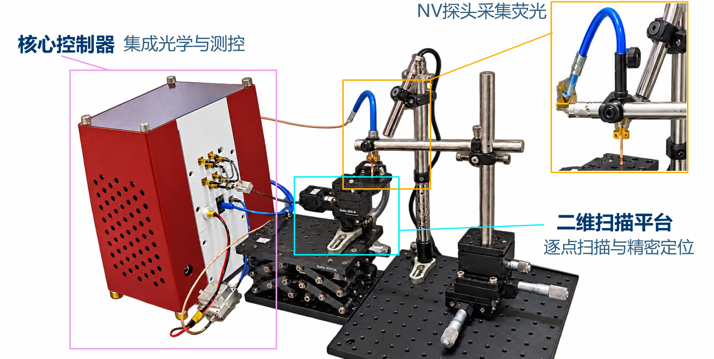

01 · 系统组成
三大部件，一套完整测量链

核心控制器
集成光学与测控
激光泵浦、微波扫频与荧光探测一体化集成，是整套系统的"大脑"。
NV 探头
光纤耦合的金刚石 NV 色心探头，负责在待测位置采集荧光信号，把磁场信息"读"出来。
二维扫描平台
逐点扫描与精密定位，带动探头扫过样品表面，获得空间分辨的磁场分布图像。
基于金刚石 NV 色心光探测磁共振（ODMR）原理的量子磁测量系统：绿光泵浦、微波扫频、荧光读出的全部环节集成于一套桌面化装置，配合二维扫描平台实现逐点磁场成像。
